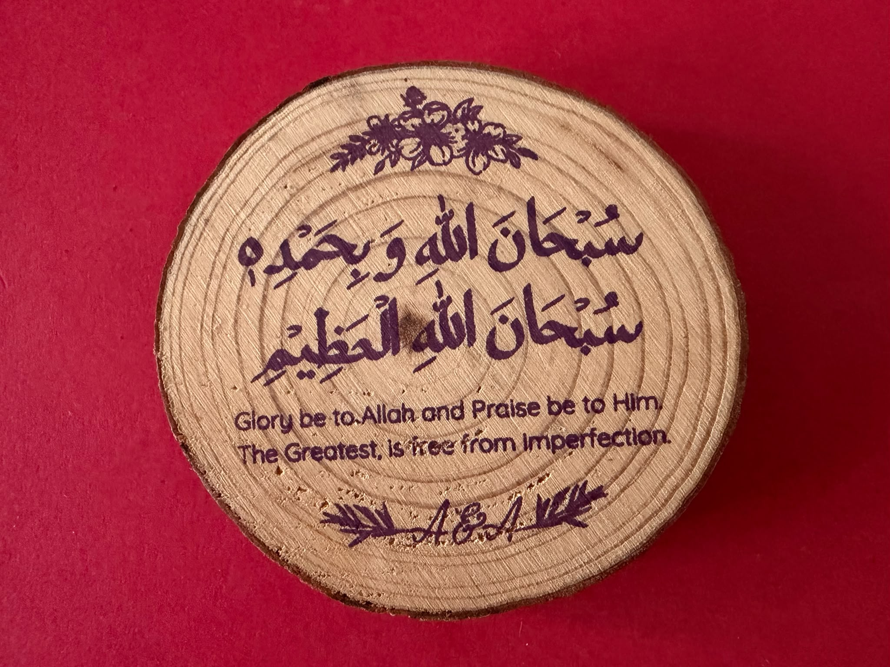
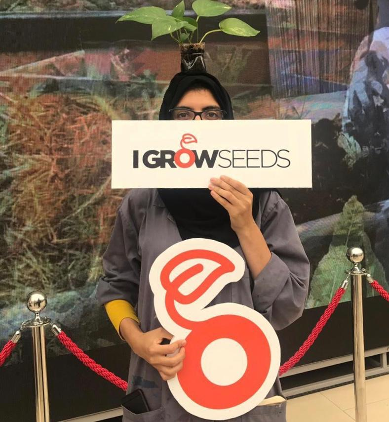
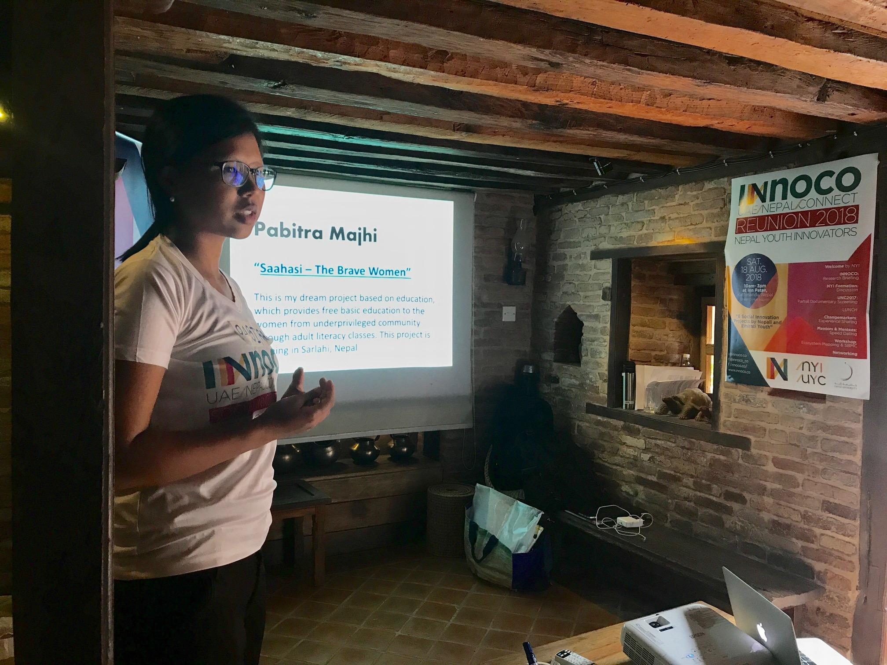
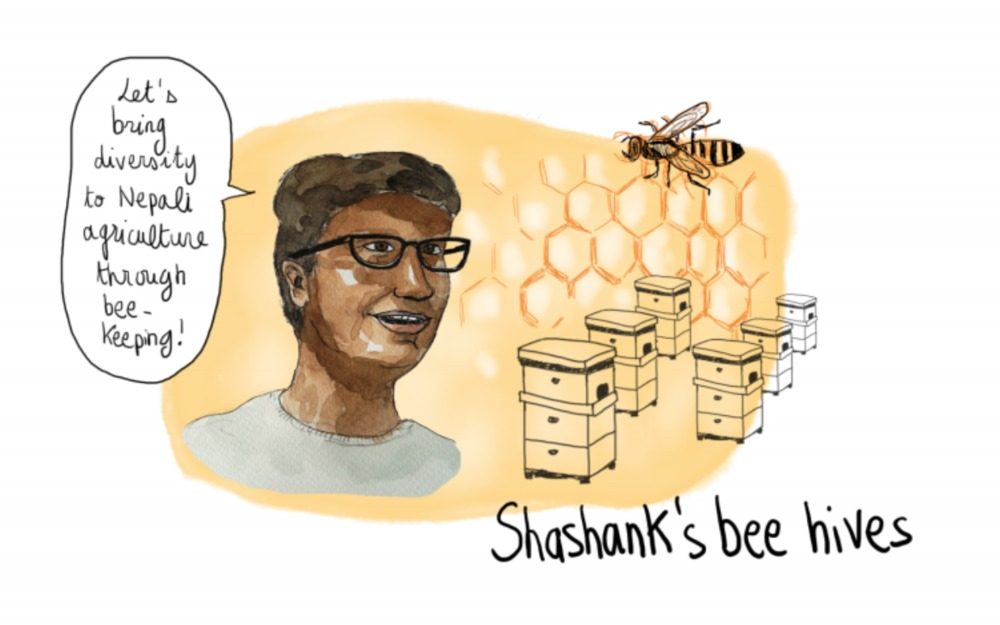
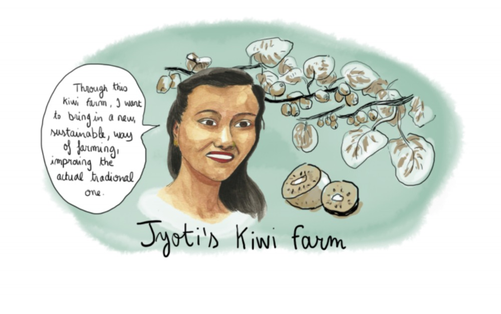
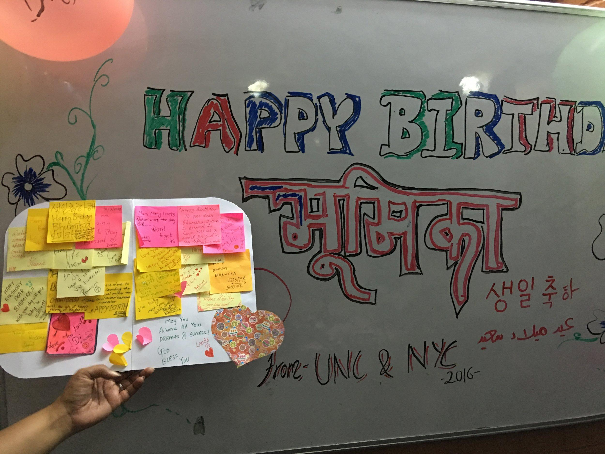
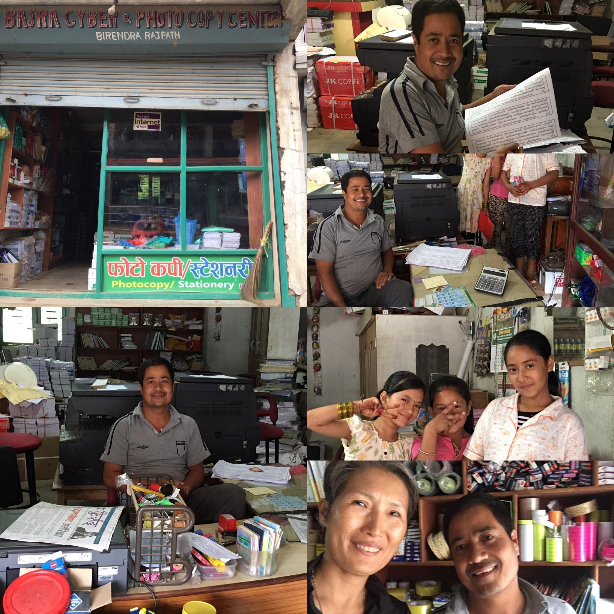

Story · Writing
I lived it · A classroom
“This is us”
I stopped teaching and asked one real question. By the end, a boy pointed at what they’d made and said: this is us.
This is a place to share the small, true moments when
“ME” and “WE” turn out to be one. We call that ME=WE.
Each story you add is one more point of light
in a collection we are building together.
None of us sees the whole picture alone.
A teacher who changed how her classroom feels. A neighbor who knocked on a door. Someone who tried ME=WE in real life and watched what happened next. These moments are everywhere, and most go untold.
Your story holds something the rest of us cannot see without you. It does not need to be well-crafted; it needs to be yours. No spectators here, only people who notice, and pass it on.
Not a testimonial. Not a polished essay. Just a real moment, in whatever form it carries: a few sentences, a photo, a drawing, a song, even a recipe.
A moment you were in. You acted, and something changed — or did not.
In a meeting where nobody would speak, I put my hand up first. My voice shook. Afterwards two people came over and said they had been thinking the same thing.
ME=WE out in the world: a street, a film, something in nature.
A child gave up their seat on the bus. Three stops later another passenger did the same. Nobody said a word, but something had moved.
Someone else’s story, carried here by you.
My grandmother told me about the neighbour who opened a door during the war. That door is the reason my family is here.
A scene that has not happened yet. A hope, a what-if.
The empty lot on our street becomes a garden. Three households the first year, twelve the next. I have not turned the first spade yet.
You do not need the right words. Start with one honest moment, and see where it goes.
The Constellation grows as neighbors add their own.
I stopped teaching and asked one real question. By the end, a boy pointed at what they’d made and said: this is us.
A grandson comes home breathless — he tried ME=WE on his friends, and for the first time, watched it actually work.

She had run social impact programs for years. It never occurred to her to point one at her own brothers.

A visual art student walked into a garden project to see what it was. She stayed three years and built a food forest.
Two sessions of one cohort: five time zones discovering how closely their hopes aligned, then practising letting go of ego — the flip, from independence to interdependence.
A participant describes a meditation on letting go — and the moment ME+WE stopped being an idea.

He was a driver with savings meant for his daughters. He built a youth club instead — and took her with him.

His first poem, written at eight. His first prototype, abandoned at twenty-one. Both taught the same thing.

Her village is a World Heritage Site. The women who hold it together don’t appear in any figure.

She was unemployed and poor, and thought encouragement was the only thing she had to give.

Eighteen strangers, three days in. One of them had a birthday. Nobody organised what happened next.

The power cuts out most afternoons in Parphing. A shopkeeper decided what to do with the hours it left him.
Share
You do not need to be a writer. You need to be honest. Every story you add joins the Constellation we are building together, and some are chosen to feature here.